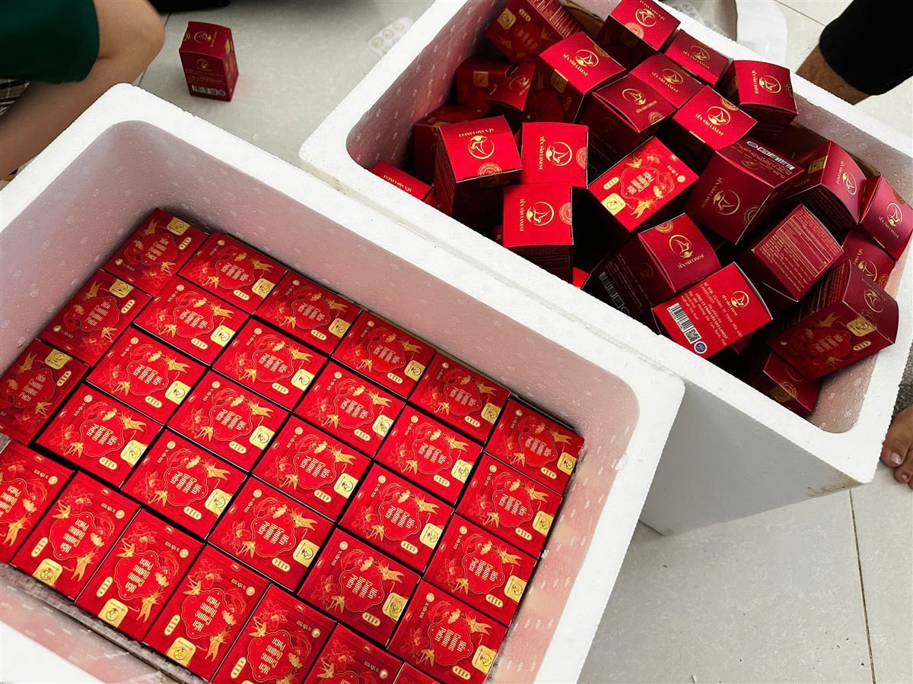

Bài đánh giá sản phẩm thường chỉ đăng lời khen. Bài này thì khác: đầu tháng 9/2026, Lanest gửi phiếu khảo sát cho khách và đại lý, nhận về 20 phản hồi có điểm, và chúng tôi đăng lại cả phần khen lẫn phần chê. Nếu anh chị đang tìm đánh giá yến sào Lanest từ chính người đang bán và đang dùng, đây là bức tranh thật, kèm những gì Lanest đã làm được và những gì còn đang ở mức ghi nhận.
Hũ yến chưng táo đỏ, một trong những vị được khách góp ý trong đợt khảo sát
1. Khảo sát được làm thế nào?
- Thời gian: từ 31/8 đến 4/9/2026, qua một biểu mẫu trực tuyến.
- Người trả lời: 20 phản hồi có điểm. Phần lớn là đại lý, khách sỉ đang bán hàng Lanest, nên nhiều góp ý là lời khách lẻ phản hồi lại qua đại lý.
- Cách chấm: thang 1 đến 5 cho năm tiêu chí: chất lượng sản phẩm, đóng gói, phụ kiện và hình ảnh, thái độ phục vụ của nhân viên, chăm sóc và tư vấn.
- Bảo mật: tên khách được giữ kín theo đúng cam kết trên phiếu, bài này không nêu tên ai.
Đây là một đợt nhỏ, nên chúng tôi coi kết quả là tín hiệu để lắng nghe, không phải con số để quảng cáo.
2. Điểm số: mạnh nhất là con người, thấp nhất là chất lượng cảm nhận
| Tiêu chí | Điểm trung bình (thang 5) |
| Chăm sóc, tư vấn | 4,76 |
| Thái độ phục vụ của nhân viên | 4,71 |
| Phụ kiện, hình ảnh | 4,71 |
| Đóng gói | 4,67 |
| Chất lượng sản phẩm | 4,48 |
Có một phiếu chấm thấp ở tất cả tiêu chí nhưng không để lại góp ý, nên chúng tôi không biết lý do. Những người được hỏi thêm về độ ngọt đều chọn "ngọt vừa phải". Lời khen ngắn mà chúng tôi quý: "Yêu Lanest", "Chúng tôi rất hài lòng với công ty!"
Điều đáng nói là tiêu chí thấp nhất lại là chất lượng sản phẩm. Phần dưới đây là các góp ý cụ thể.
3. Góp ý về chất lượng: yến loãng, chân yến chưa sạch
Ba góp ý nặng nhất, trích nguyên văn:
- "Yến càng ngày càng loãng, vỏ hũ để màu hơi tối"
- "Sản phẩm ngon nhưng yến chưa được nhặt sạch, phần chân yến chưng hũ, khách hàng nhìn vào không đẹp mắt và nghi ngờ chất lượng sản phẩm"
- Một đại lý mong sản phẩm "có nhiều yến thật" hơn.
Chúng tôi nói thẳng: đến thời điểm viết bài, Lanest chưa có kết quả kiểm chứng để nói rằng những điểm này "đã sửa xong". Các góp ý này đã được ghi nhận. Trong lúc chờ, có, có hai điều anh chị kiểm được ngay:
- Đọc nhãn: hũ yến chưng dòng 7g ghi rõ 7g yến tươi và đầy đủ thành phần, gồm cả chất ổn định và hương yến tổng hợp. Cách đọc có trong bài cách đọc nhãn yến hũ.
- Muốn nhiều yến hơn: dòng nguyên chất 100% có 1,5g tổ yến mỗi hũ, tương đương 15g yến tươi, thành phần chỉ có nước tinh khiết, tổ yến, đường phèn (và đông trùng hạ thảo hoặc gừng tùy vị). So sánh chi tiết ở bài yến hũ nguyên chất và yến hũ 7g.
4. Góp ý theo từng vị
- Táo đỏ: "Khách phản hồi vị táo đỏ đặc quá"
- Gừng: "Yến vị gừng có hơi nòng nên khách hàng ưa chuộng không bằng loại khác"
- Dòng trẻ em: "Dòng dành cho bé nên chế biến loãng hơn tý xíu cho bé dễ uống hơn"
Lanest chưa công bố thay đổi công thức nào cho ba vị này; góp ý đã được ghi nhận. Khẩu vị mỗi nhà một khác, nên cách làm hiện tại là để khách tự chọn: dòng 7g có 14 vị, và một đơn hàng được trộn nhiều vị. Ai thấy táo đỏ đặc hay gừng nồng có thể đổi sang vị nhẹ hơn như đường phèn, vị bán chạy nhất của Lanest. Xem bài 14 vị yến chưng, chọn vị nào. Với trẻ nhỏ, lưu ý bé từ 12 tháng tuổi trở lên mới nên dùng yến.
5. Góp ý về bao bì và dịch vụ
- "Thi thoảng tem dán bị lệch, nhăn ạ"
- "Cải thiện mẫu vỏ hộp set 6 đẹp và cứng cáp hơn"
- Một khách góp ý phí giao hàng chưa giảm theo giá xăng dầu và mong có thêm chương trình khuyến mãi.
Một việc đã làm, áp dụng từ giữa tháng 9/2026: mỗi đơn hàng ghi tên người soạn và tên người đóng, để hai người cùng kiểm lại đơn và khi có sai sót thì truy đúng khâu. Đây là quy định chung cho khâu soạn, đóng hàng; chúng tôi không nói nó đã giải quyết hết chuyện tem lệch. Mẫu hộp quà thì Lanest vẫn thường xuyên làm mới, góp ý về độ cứng của hộp 6 hũ được ghi nhận cho các mẫu sau.

Khâu đóng hàng: hộp yến xếp vào thùng xốp trước khi giao
6. Nếu anh chị nhận phải hũ lỗi
Góp ý qua khảo sát là một kênh. Khi cầm trên tay một sản phẩm có vấn đề, anh chị dùng chính sách bảo hành của Lanest:
- Trong vòng 15 ngày kể từ ngày nhận hàng và chưa quá hạn sử dụng.
- Áp dụng khi hũ vỡ, rò rỉ, không kín, sản phẩm biến chất do lỗi vận chuyển hoặc nhà sản xuất, giao sai loại; với yến tinh chế là ẩm, mốc, có dị vật.
- Nên quay video lúc mở hộp, giữ hóa đơn, tem niêm phong.
- Gọi hotline, gửi hình ảnh, video; Lanest phản hồi trong 1–2 ngày làm việc, đổi sản phẩm mới hoặc hoàn tiền theo thỏa thuận. Phí vận chuyển phát sinh do lỗi từ phía công ty được miễn.
Chi tiết đặt hàng, giao hàng, đổi trả có trong bài mua yến tại Lanest.
Vì sao chúng tôi đăng cả lời chê? Người sáng lập Lanest từng nói về những điều không đánh đổi:
"ba điều mà mình không bao giờ đánh đổi dù có dù có là lời lãi hơn nữa thì mình cũng không đánh đổi. Đó là mình phải giữ ý tín nè, có trách nhiệm và làm những cái việc có đạo đức."
Giữ uy tín, với chúng tôi, bắt đầu từ việc không giấu những gì khách chưa hài lòng.
Câu hỏi thường gặp
Lanest đã đổi công thức vị táo đỏ, vị gừng chưa?
Chưa có công bố thay đổi, góp ý đã được ghi nhận. Anh chị có thể gọi hotline để hỏi thêm về vị đang bán hiện tại.
Yến hũ 7g của Lanest có phải 100% yến không?
Không. Dòng 7g có 7g yến tươi mỗi hũ cùng các thành phần ghi trên nhãn như collagen, chất xơ inulin, chất ổn định, hương yến tổng hợp. Nếu muốn hũ chỉ có yến, nước và đường phèn, anh chị chọn dòng nguyên chất 100%.
Tôi muốn góp ý về sản phẩm thì gửi ở đâu?
Anh chị gọi 0258 6278 627 hoặc nhắn qua lanest.com.vn. Lanest luôn tiếp nhận góp ý, cả khen lẫn chê.